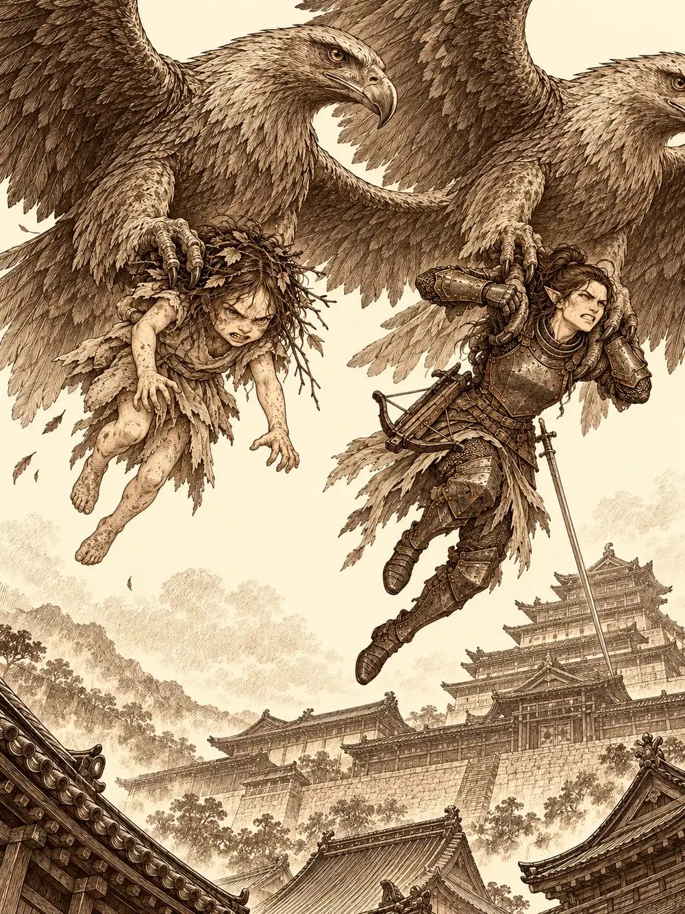

Capítulo 144
Una obra en la casa del té
Libro IX · Mareas y muertos
La casa del té de la zona alta tenía dos pisos y unas puertas enormes pintadas con mujeres que bailaban. A los lados colgaban faroles de luz rosada, y con aquel resplandor las bailarinas parecían moverse de verdad. Guxi empujó una de las hojas y dejó pasar primero a Serafina, que llevaba las orejas muy tiesas y la boca apretada, como quien entra en un sitio bonito con una piedra metida en la sandalia.
"¿Te fue bien, entonces, lo de la cárcel?", preguntó él.
"Estuvo entretenido. Me dejó alguna duda, pero no quiero hablar de eso ahora. Quiero hablarlo contigo despacio, y no pienso arruinar esta noche".
Días antes, Guxi la había ayudado a colarse en la celda de Danifae, después de intentar quitarle la idea de la cabeza sin ningún éxito. Serafina le había llevado a la prisionera el trago prometido, y la drow, colgada de sus cadenas, le había devuelto el favor con un consejo: que no se fiara de nadie, porque todos le escondían cosas. Todos. La capitana había salido de allí con esa palabra clavada como una espina de pescado.
"Yo nunca hablé mucho con ella", dijo Guxi. "Sabía que era peligrosa".
"Eso no fue lo que me dijo".
Takiki, la anfitriona, no tenía ningún reservado libre y los sentó en el salón, donde esa noche, prometió, iban a representar una obra especial. Al fondo, en un escenario, una mujer vestida de oro bailaba al son de los músicos. Serafina reconoció a algunos nobles: Ayuko, la estratega; Montaro; Fukami bebiendo a morro de una de sus botellas de vino dulce, con Hanae a su lado; Yuichi y su esposa en primera fila. Y en una esquina, rodeado de mujeres y de copas vacías, un joven vestido de verde.
Guxi lo vio y su mano bajó despacio hacia la pistola. Serafina puso la suya encima.
"Lo hice por una buena razón, créeme, y no pasó nada más. No te des la vuelta".
En un reservado del piso de arriba, Calista servía el té con una ceremonia que no se le olvidaba ni descansando. Llevaba días levantándose al alba, y Gelbreak, al verla tan consumida, la había sacado del palacio. Ni allí dejaba ella de pensar en el trabajo. Un lord de Puerto de las Espadas se había interesado por Kuroto más de la cuenta y había enviado informantes; Calista se había aliado con Tiari, que tampoco quería contrabando ajeno en sus calles, y entre las dos habían hecho que esos informantes dejaran de informar. Pero el lord enviaría otros, y mercancía. Había pedido a Guxi un invento para vigilar las aduanas y a Serafina que enseñara a los soldados las artimañas de los piratas.
Gelbreak dejó dos estuches pequeños sobre la mesa. Calista abrió el primero, vio un anillo y se le pusieron los ojos como platos; durante un instante larguísimo pensó cosas que no se atrevió a decir en voz alta. Él le explicó que era un anillo mágico, comprado al herrero, para protegerla. Ella dijo "ah, vale" tres veces seguidas. El segundo estuche contenía otro anillo, distinto, y él mismo se lo puso en el dedo.
"Así quizá no te golpeen tanto en combate".
"Tampoco me golpean tanto".
"Cuando saltas a lo loco. Te recuerdo lo del vampiro".
Calista le dio un beso más largo de lo que exigía el agradecimiento y salió al pasillo. Allí se encontró de frente con dos de sus cazadores, y se quedó parada con la cara de la jefa que sorprende a sus empleados fuera del trabajo. Ellos pusieron la de los empleados que sorprenden a la jefa. Calista no era una tirana, les aseguró; Guxi tendría que estar trabajando, sí, pero ella también. Siguió la mirada del artífice hasta el joven de verde y sonrió.
"A mí tampoco me cae muy bien. Si queréis, podemos juguetear un poco con él".
Cuando Gelbreak bajó y la vio sentada con ellos, dando palmaditas al cojín de al lado, reconoció aquella sonrisa. Era la de cuando tramaba algo.
Empezaron por Hanae, que no estaba en el plan de nadie salvo en el de Calista. La shogun pidió a Guxi que encargara una copa para la señorita de azul de la mesa de al lado, de parte de un admirador anónimo. Cuando la sirvienta se inclinaba para servirla, Calista le susurró una orden que la muchacha obedeció sin saber de dónde venía, y soltó la copa; en el mismo instante Guxi la hizo crecer en el aire hasta el tamaño de un barril. Reventó contra la mesa. El vino empapó a Hanae y a Fukami, que se puso a lamerse los brazos para no desperdiciar ni una gota. Hanae se levantó furiosa.
"Maldita asquerosa, cómo te...".
Entonces vio a Calista, y lo que apareció en sus ojos fue pánico. Murmuró que se marchaba y se marchó.
"¿Qué le has hecho a esa mujer?", preguntó Serafina.
"Nada. Nos hemos cruzado un par de veces y ha entendido que no debe tocar lo que es mío".
Luego le tocó a Nomi, el joven de verde, porque a Guxi también le habían llegado rumores del baile. A Guxi volvió a írsele la mano a la cintura y Calista le advirtió, sin perder la sonrisa, que si sacaba un arma allí tendría que detenerlo ella misma, y que era mucho más divertido que los enemigos vivieran para disfrutar de su humillación. Serafina aclaró lo que había pasado de verdad aquella noche: había emborrachado a Nomi hasta dormirlo y había fingido el resto. No había hecho falta ni tocarlo.
"Lo engañaste. Bien hecho".
Entre broma y broma, la shogun le preguntó si había recibido su propuesta de instruir a los soldados.
"Tiene gracia eso de llamar marineros a los piratas", contestó la capitana. "Los voy a instruir en todo lo que sé, así que ten la confianza de que haré un buen trabajo".
Al decir confianza se le hizo un nudo en la garganta.
Montaro los interrumpió. El noble hizo una reverencia ante la shogun y le presentó a la joven pelirroja que llevaba de la mano: se llamaba Akuki y acababan de casarse. Calista reconoció el apellido de una familia noble de rango menor, los felicitó con todas las fórmulas de la etiqueta y los vio alejarse con el ceño apenas fruncido. Recordaba a Montaro muy interesado en los asuntos extranjeros y muy poco en buscar esposa. No dijo nada más.
Para entonces Guxi tenía un plan, o algo parecido. Serafina aportó unas croquetas que llevaba en la bolsa desde el día en que se conocieron, regalo de una anciana que había cubierto a Guxi de besos y lo había tirado al suelo; nadie se había atrevido a probarlas, y lo que tenían de verde ya no parecía perejil. En el servicio, Guxi cambió de cuerpo, de verdad y no con una ilusión, y salió convertido en una de las muchachas de la casa, con una bebida cargada de la pasta más picante de la cocina. Lo único que no había podido cambiar era la voz.
"Le han invitado a una bebida y un poco de comida, señor".
Nomi preguntó quién lo invitaba. Guxi dijo que un señor del fondo, y el noble apartó la copa con asco: no aceptaba bebidas de ningún hombre. El artífice se quedó en blanco hasta que oyó en su cabeza la voz de Calista, que le enviaba palabras a distancia: la bebida podía ser de un hombre, pero la comida, de una dama.
"La comida, señor, viene de parte de aquella señora".
Nomi miró a Serafina, se le iluminó la cara y dijo que se llevaran la bebida y le dejaran las croquetas. La voz de Calista le aconsejó a Guxi que no tentara más la suerte. Nadie llegó a ver si Nomi se las comía.
"No eres el mejor haciendo estas cosas, corazón", le dijo Serafina. "Es cuestión de práctica".
Una sirvienta les anunció, muy solemne, que con aquella botella habían ganado un premio: participar en la obra de esa noche. En el vestuario de las mujeres, mientras Calista le abrochaba un traje de caballero, Serafina le confesó lo que llevaba días callando. Tras lo ocurrido con el gigante, cuando había herido a los suyos sin ser dueña de su cuerpo, había pensado en romper el compromiso y había llegado a devolverle el anillo a Guxi. Ahora lo llevaba otra vez, y la boda esperaría a que terminara la guerra, pero no recordaba nada de su vida anterior a los piratas, y si bebía tanto era porque oía gritos y mucho dolor.
"¿Y él te apoya?".
"Muchísimo. Me sorprende que alguien me tenga tanta paciencia".
"Pero recuerda que para estar con una persona también tienes que estar bien tú", dijo Calista. "Estar con alguien te podrá ayudar con esos problemas. No te los va a solucionar".
Al otro lado del pasillo, Gelbreak le preguntó a Guxi si tenían problemas en la alcoba, porque para estar a punto de casarse los veía muy tristes. Guxi le aseguró que la alcoba iba bien, salvo que el otro día casi se habían matado intentando aterrizar. Hablaron de bodas. Gelbreak tenía planes con Calista, pero no pensaba ponerse en el dedo nada que representara a un dios, aunque, según él, solo ante un dios sería vinculante. De ahí pasaron a Nomi.
"No me gustan las bromas pesadas", dijo Guxi. "Quería matarlo".
"Yo lo habría matado. Entonces, ¿por qué nos echas a Calista y a mí la culpa de lo que hacen otros?".
Guxi le recordó lo de su padre, aquel bardo que había intentado engañar a Gelbreak haciéndole creer que la mujer que lo acompañaba era su madre. Por su culpa no soportaba a los de ese oficio.
"A mí no me gustan los humanos y no voy por ahí metiéndome con todos". Gelbreak lo miró de frente, serio, sin rabia. "No quiero ningún problema contigo. Pero si lo que arrastras de tu padre empieza a hacerle daño a Calista, lo acabaré rápido. O lo solucionas tú, o me encargo yo".

"Sé controlarlo".
"Pues deja de culpar a los demás por lo que hacen otros".
Guxi siguió poniéndose el disfraz con la cabeza gacha. Había crecido casi solo, con un padre que iba y venía y un maestro que había hecho de padre de verdad, y desde que Serafina había entrado en su vida sentía algo que no había sentido nunca. Ella esperaba entre bastidores con el estómago revuelto. De niña, los piratas la obligaban a beber y a imitar pasos de combate para entretenerlos, y los aplausos todavía le removían algo por dentro. Lo que más temía era perder a Guxi y descubrir que la habían vuelto a engañar.
El presentador era Sota, el mismo que anunciaba los torneos de Sho. Guxi dijo que era cazador y Sota tranquilizó al público: estaba prometido, señoritas, pero ya vendría otro. Serafina se presentó como Serafina Longhop, también cazadora. Gelbreak gruñó su nombre y nada más, y Sota vaticinó que aquello iba a ser horripilante.
La obra era un cuento viejo. Un rey bondadoso entregaba cada año una doncella a un dragón, hasta que la suerte cayó sobre su propia hija. Guxi hizo de rey con la corona torcida. Calista hizo de princesa con una dulzura que dejó a todos boquiabiertos.
"Padre, ¿qué es un rey sin corona? ¿Y qué es un reino sin su gente?".
El dragón salió a escena con un disfraz hinchado del que asomaba la cara de Gelbreak, que no habría parecido más desgraciado en un calabozo. Calista fingió desmayarse en sus brazos, abrió un ojo y le susurró que, si se esforzaba un poco, luego en casa le haría uno de esos bailes que se había perdido. El dragón se lanzó a su cuello con un entusiasmo nuevo y tardó tanto en soltarlo que Sota tuvo que improvisar mientras los falsos héroes, que solo querían el oro del rey, huían uno tras otro. Hasta que llegó el caballero.
"Amado rey, no pido joyas ni oro", declamó Serafina con una rodilla en el suelo. "Me basta con devolverle lo que más anhela".
Se llamaba Jorge. Desafió al dragón en su cueva, y Calista le dio en voz baja una orden mágica muy sencilla, "cae", con la que Gelbreak se desplomó sobre las tablas con todo el peso del disfraz. De la sangre del monstruo brotó una rosa de papel que el caballero ofreció a la princesa; luego Serafina la inclinó hacia atrás y le dio un beso que desde las mesas parecía tan real que Calista se quedó rígida. El público aplaudió más de lo que esperaban.
Tsugami los esperaba al bajar, encantada y quejosa: a Serafina le habría hecho un traje muchísimo mejor, y el dragón había estado horrible. Cuando la capitana le enseñó el anillo, la modista se echó a reír. Ella llevaba diecisiete maridos, y el que menos le había durado, diez minutos.
De vuelta en la mesa, Serafina brindó por el villano, que lo había hecho muy bien. Calista le recordó a Guxi que Gelbreak ni siquiera sabía cantar, que no todos los de su oficio eran iguales y que eso no dependía de lo que uno supiera hacer, sino de cómo fuera la persona.
"Además, tú estás comprometido con una pirata", añadió Serafina.
Guxi tardó en contestar. Dijo que le costaba confiar en esa gente, pero que no era imposible.
"Lo siento si he sido injusto con vosotros".
"Lo importante es aprender y seguir adelante", dijo Calista. "El palacio es un montón de problemas, pero sigo siendo vuestra compañera".
Para cambiar de tema, la shogun les pidió alguna anécdota graciosa de pareja. Serafina contó la de aquella vez que casi se estrellaron cayendo en picado porque a cierto señor se le había ocurrido ponerse cariñoso en pleno vuelo. Gelbreak quiso saber si todas sus anécdotas iban de lo mismo, y los dos descubrieron con cierto bochorno que sí. Guxi prometió que, cuando todo acabara, la llevaría a un sitio más romántico.
Gelbreak le recordó entonces a Calista que tenía unos papeles que firmar, y ella, de pronto muy afectada, se acordó de los presupuestos de Hakara y se levantó con toda la elegancia del mundo. Al pasar junto a la mesa de Fukami, el drow se llevó las dos botellas que quedaban. Ya en la calle, Calista propuso guardar una para casa y tomarse la otra allí mismo, y desaparecieron entre la gente, lejos del palacio.
"No me cabe en la cabeza cansarme de ti", le dijo Guxi a Serafina.
"Eres un tonto romántico, ¿lo sabías?".
Antes del amanecer, en un callejón de Sho, una figura armada atravesó a una mujer de parte a parte y, de paso, mató a una rata. Cuando se esfumó quedaron el cadáver del animal y un charco de sangre demasiado grande para él. Un cachorro se acercó a olfatearlo y notó algo muerto y vivo a la vez. "No lo toques", le dijo alguien, y del susto el cachorro volvió a ser Arwen. La perseguidora era una pelirroja de orejas puntiagudas y armadura verde, que preguntó por Gelbreak. Se llamaba Verbin, y en la cofradía de Tiari la conocían. Para llegar antes al palacio, Arwen llamó a dos águilas gigantes que las alzaron por las axilas; la cazadora forcejeó y acabó aceptando el vuelo con los dientes apretados.
Calista entrenaba con Gelbreak con estoques de madera cuando las águilas aparecieron en la ventana. Verbin anunció que necesitaba al guardián; Calista exigió respeto y una audiencia formal, y la otra le contestó que la ciudad podía llenarse de bichos y que no había tiempo para celos. La shogun le lanzó el estoque y cargó; Verbin la esquivó y le aplastó la cabeza contra el suelo, y solo Gelbreak frenó el aliento del dragón en que Calista se había convertido. La pelirroja explicó al fin que conocía un escondite en las alcantarillas y necesitaba a alguien competente para matar lo que vivía allí abajo.
Más tarde, con un mapa viejo de las alcantarillas sobre la mesa, la discusión estalló. Calista quería dirigir la distracción; Gelbreak no soportaba verla convertida en cebo de la criatura que ya los había puesto en peligro. Se mezclaron los celos por Verbin, el cansancio y la sensación de Calista de que él la creía débil. Al final ella le dijo que se fuera y no volviera, si tantos problemas le causaba. Gelbreak dejó su collar de guardián sobre la mesa de un golpe y desapareció.
Banzo meditaba junto al lago, mirándose el muñón, cuando un rayo desintegró el árbol tras el que intentaba esconderse. Era Gelbreak, que al reconocerlo apaciguó las sombras y le contó lo ocurrido: un señor vampiro había intentado encantar a Calista y llevársela, y lo que más lo atormentaba era que, bajo el encantamiento, ella no lo había reconocido. Le pidió a Banzo que la mantuviera lejos de los niveles inferiores. El goliat aceptó, y lo acompañó al palacio. Calista se había encerrado con los papeles y la cama estaba sin deshacer; abrió cuando Banzo mencionó las alcantarillas. Él le pidió que lo pensara y se fue sin hacer ruido. Gelbreak confesó que, por apartarla del peligro, había acabado apartándola de él. Ella le explicó que verlo coordinarse con Verbin la había hecho sentirse insuficiente. Se abrazaron, pero el collar seguía sobre la mesa.
Kurobane, mientras tanto, volvía de rondar a solas las cercanías del templo cuando encontró a Sirth leyendo junto al campamento. El clérigo le preguntó si hablaba con él o con Osuray, y luego le pidió que lo acompañara a Sho. Por el camino le contó que había investigado su clan y visitado el monasterio, donde ya no estaba la estatua del maestro. Le enseñó su foco, una calavera con una cadena de huesos, y no le ocultó a quién pedía poder con ella: a Bhaal, el dios del asesinato. Había pasado años solo para no dañar a quienes quería, le dijo, y el aislamiento no había hecho más que alimentar a su monstruo. Kurobane le dio las gracias y prometió pedir ayuda cuando la necesitara.
Una mañana, en el refugio de Guxi, Serafina se despertó llamándolo prometido. Él preparaba fruta y zumo cuando llamaron a la puerta. Era Chad, su padre, con una carta de la hermanastra de Guxi: iba a casarse. El artífice la leyó y dejó escapar en voz alta que ojalá hubiera sido él. Serafina lo oyó desde la habitación. Guxi le confesó que aquella hermanastra había sido su primer amor y que lo había dicho por nostalgia. Ella dejó el anillo sobre la cama. Él la sujetó de una pierna para que lo escuchara; ella se soltó y se fue diciéndole que decidiera a quién quería. Guxi recogió el anillo, cuya inscripción hablaba de la sirena que le había robado el corazón, y se quedó bebiendo.
Esa noche, Serafina salió de una taberna dando tumbos y unas manos la sujetaron antes de que cayera. Un hombre al que nadie había visto llegar la consoló con palabras dulces, se presentó como Alister, un noble de tierras lejanas, y le regaló una flor azul que llamó Flor del Mar. La acompañó hasta la base de los cazadores y propuso cenar al día siguiente. Ella aceptó sonriendo.
Dentro encontró a Kurobane, que volvía agotado de investigar el templo del sur. Le enseñó la mano sin anillo y él la dejó llorar. Después le confió su secreto, la visita a la celda de Danifae, y él prometió guardarlo, le cedió su cama y, antes de que se durmiera, la tapó con una manta y le dijo algo que iba más allá de la amistad. Por la mañana, con resaca, Serafina notó algo bajo las sábanas. Era una segunda Flor del Mar, idéntica a la que seguía en el mueble. Kurobane, que había dormido en la silla, no había oído nada en toda la noche.